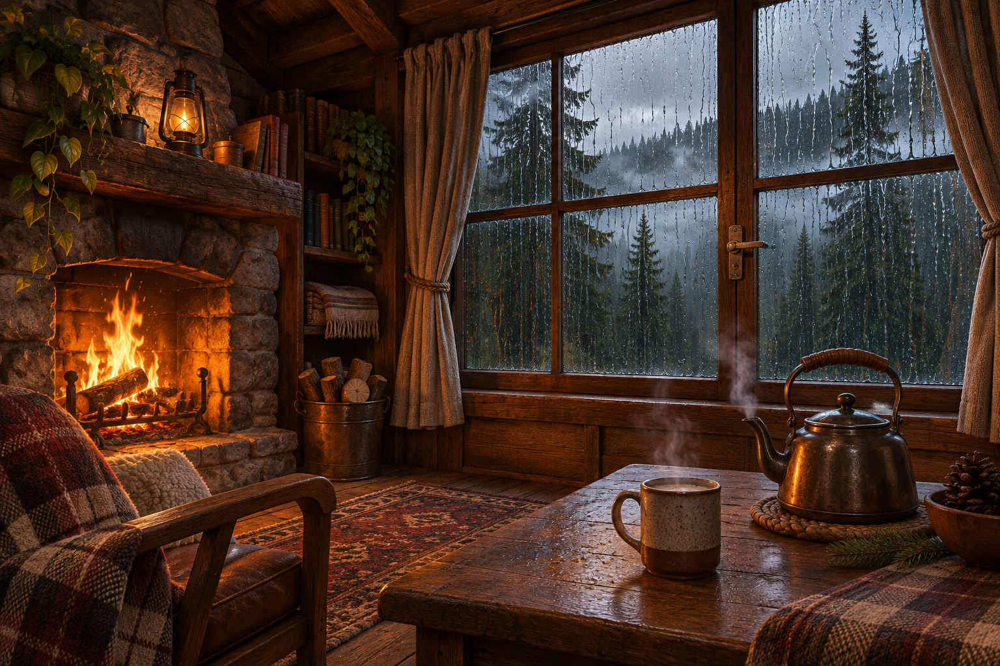Refúgio da ChuvaPrepare chá, sente junto à janela e compare o som com a abertura fechada e aberta.JogarMockup
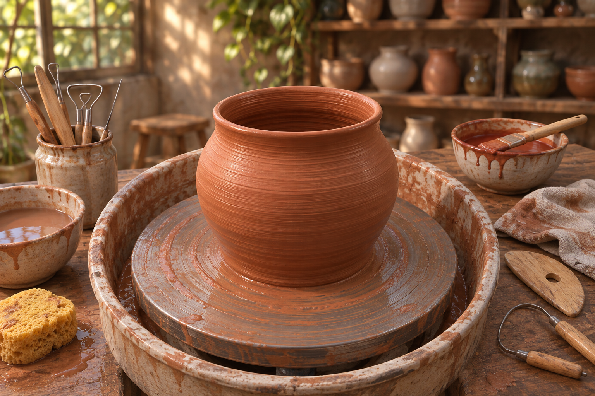Ateliê de CerâmicaMolde um vaso com paredes internas, aplique esmalte e salve o perfil.JogarMockup
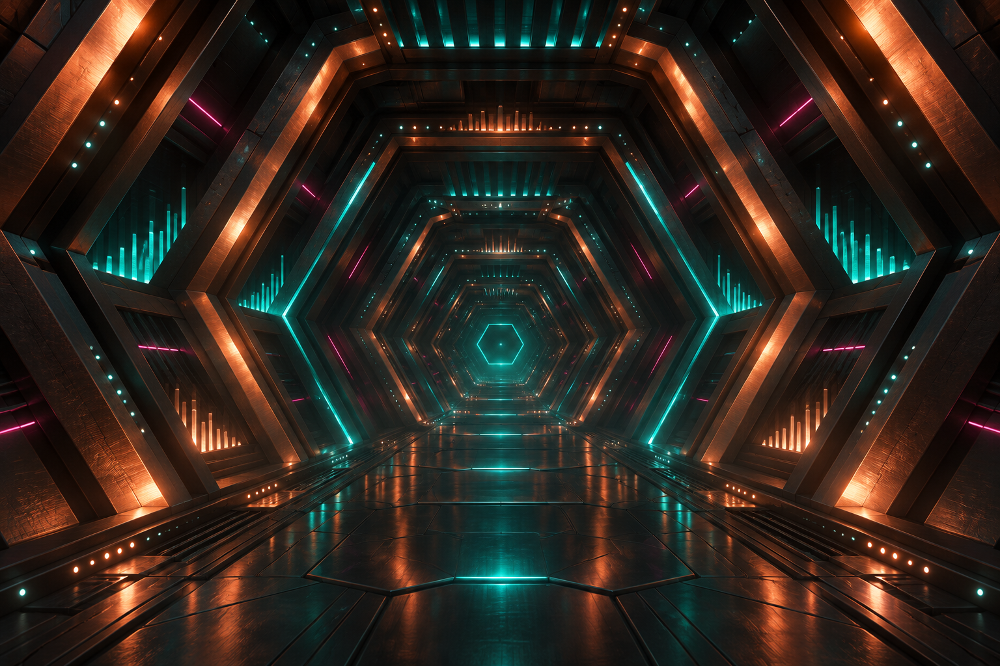Universo AudioreativoReproduza sons e observe como as três bandas moldam a cena.JogarMockup
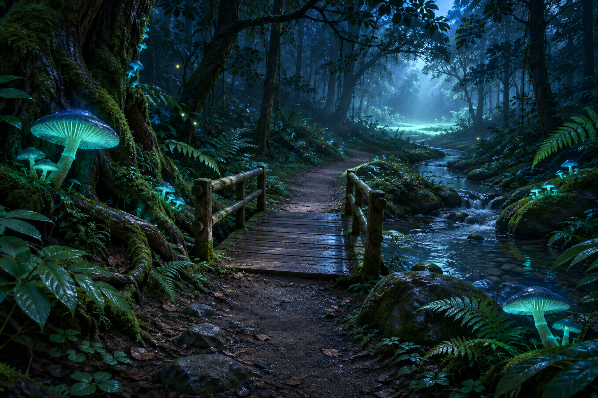Floresta BioluminescenteAtravesse o riacho, descubra espécies e registre cada encontro no caderno.JogarMockup
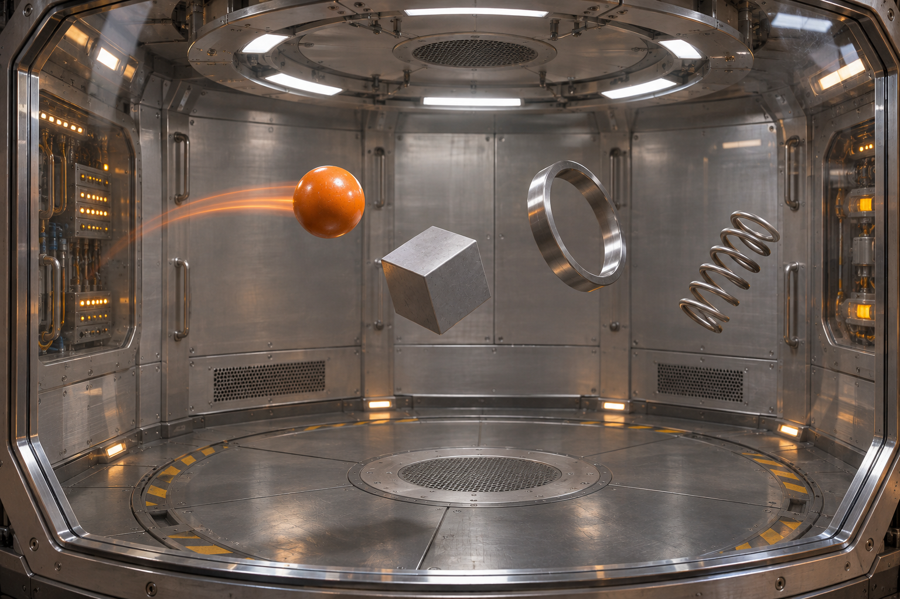Câmara AntigravitacionalCompare a trajetória de corpos em gravidade zero ou com gravidade regulável.JogarMockup
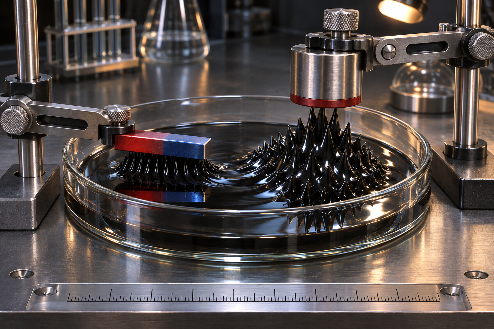Laboratório de FerrofluidoMova os ímãs e compare como altura e intensidade alteram a superfície.JogarMockup
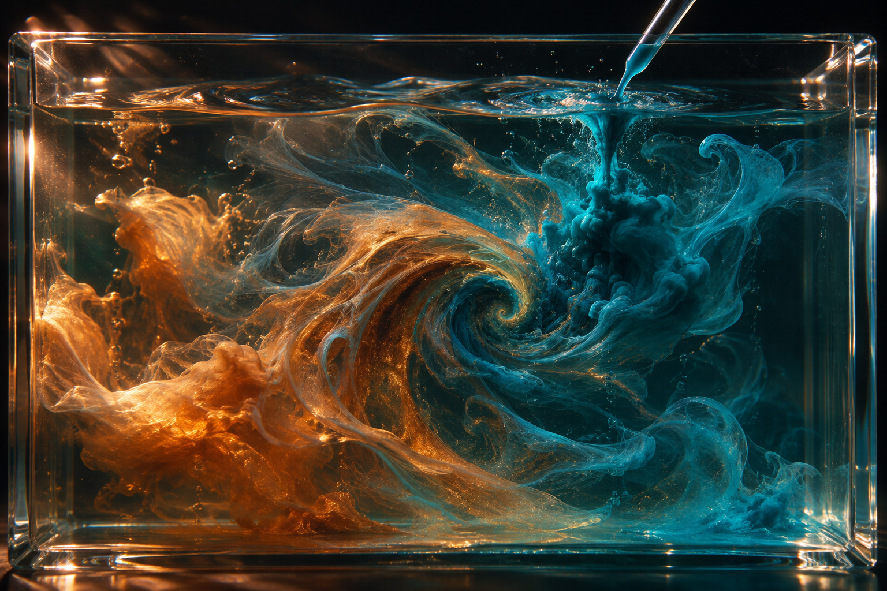Oceano de TintaInjete pigmento, mova a corrente e veja a tinta contornar uma barreira.JogarMockup
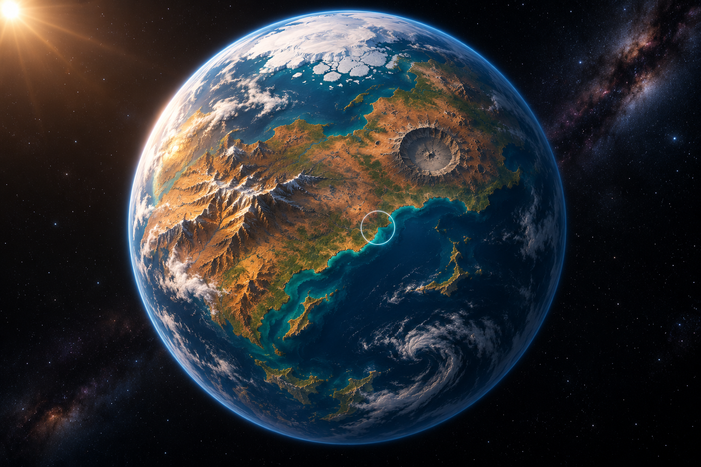Escultor de PlanetasEsculpa a superfície, ajuste o mar e salve o mundo para continuar depois.JogarMockup
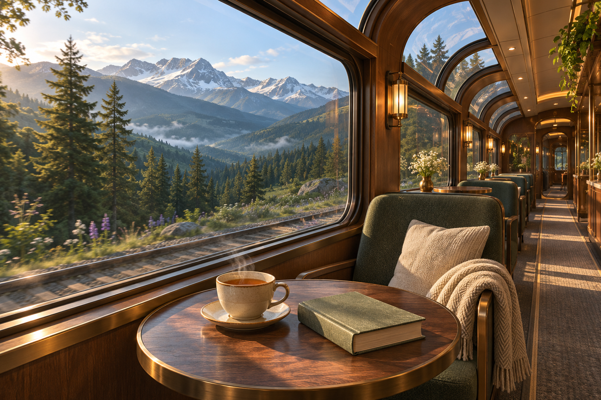Trem sem DestinoPasse pelos vagões, sente à janela e escolha a paisagem em movimento.JogarMockup
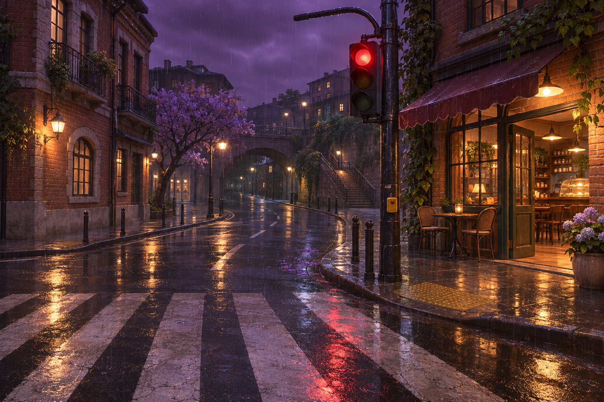Cidade da MadrugadaAtravesse a avenida sob chuva e visite o café do outro lado.JogarMockup
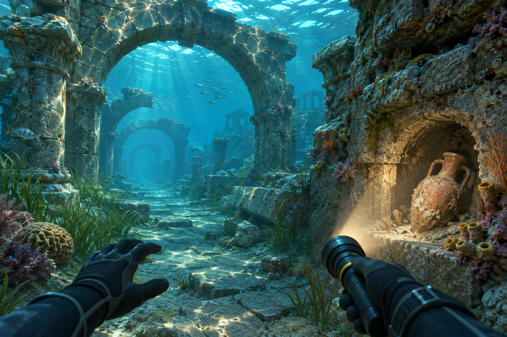Cidade SubmersaNade entre ruínas, ilumine relíquias e guarde as descobertas no diário.JogarMockup
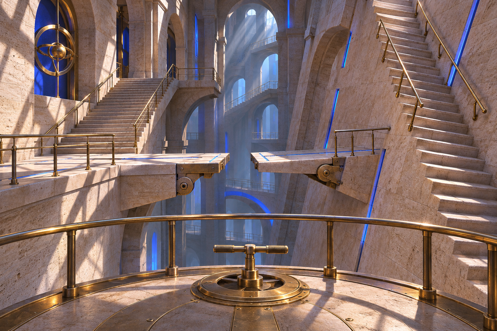Arquitetura do ImpossívelAlinhe estruturas e atravesse a passagem que você abriu.JogarMockup